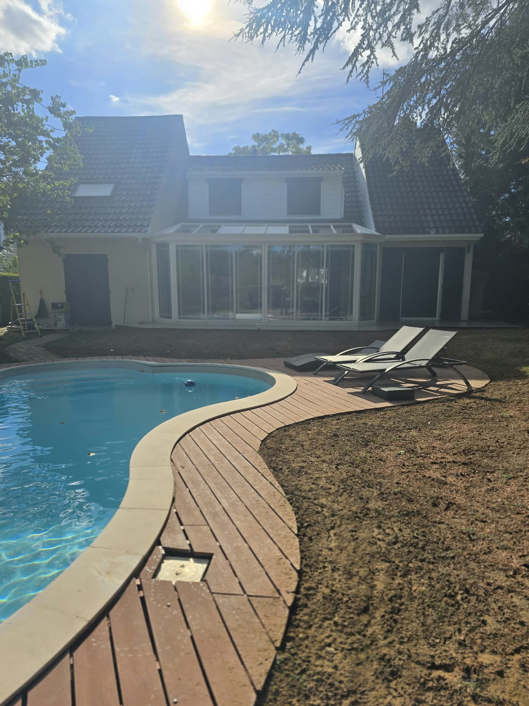
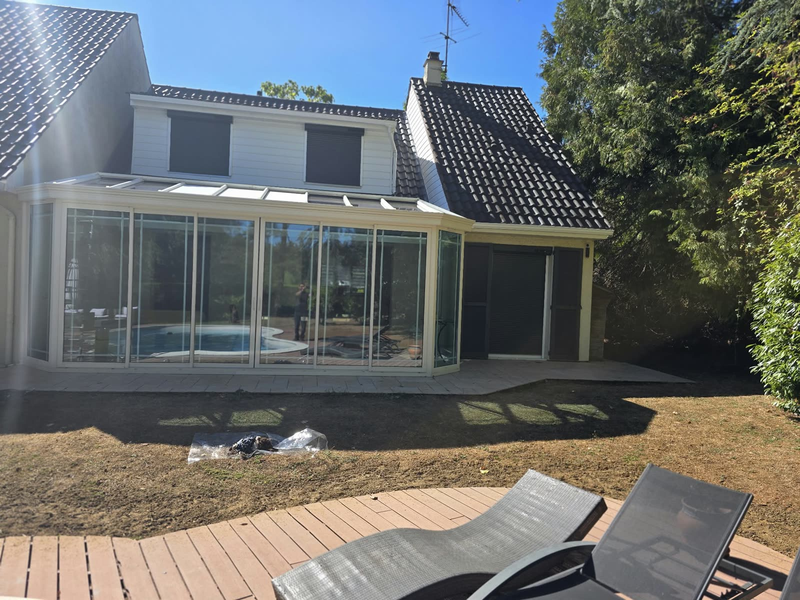
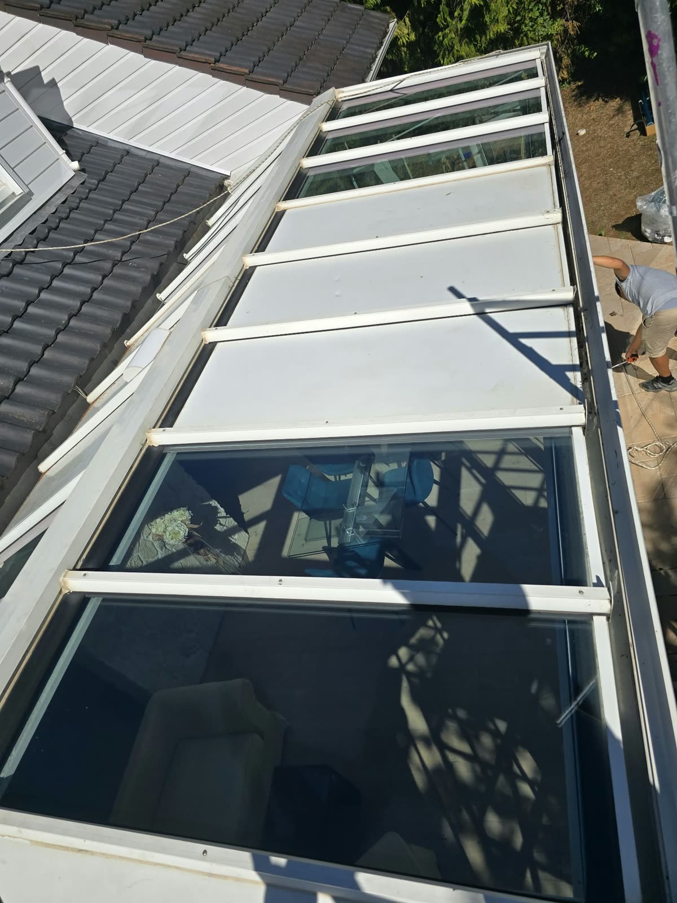
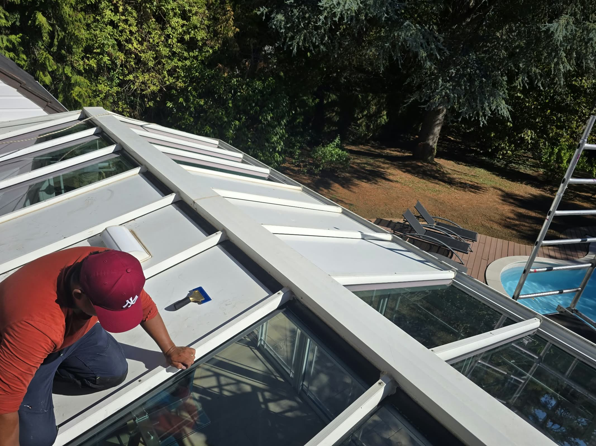
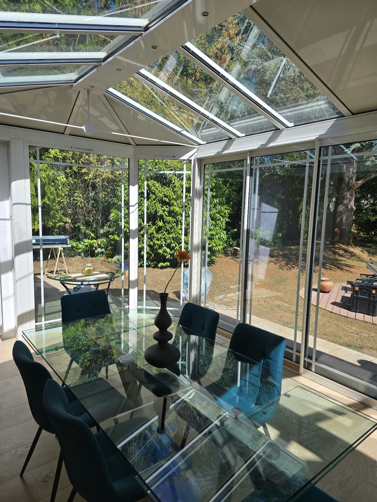

Deux films solaires extérieurs sur une véranda à Lésigny (77).
Grande véranda d'une maison individuelle à Lésigny (Seine-et-Marne), ouverte sur la piscine et exposée plein sud. Pose de deux films solaires transparents en face extérieure : 3M Prestige 70 XC sur la toiture, Spectra 333 XC sur les vitrages verticaux. Objectif : rendre la véranda vivable en été sans la fermer ni l'assombrir.

La véranda côté jardin et piscine — Lésigny (77)
Vitrages traités, aspect inchangé
La toiture de la véranda depuis le toit de la maison
Application du film en face extérieure, panneau par panneau
Sous la véranda après traitement : la lumière resteLe contexte
À Lésigny, en Seine-et-Marne, cette maison individuelle s'ouvre sur le jardin et la piscine par une grande véranda entièrement vitrée, toiture comprise. Exposée plein sud et sans masque, elle devient une serre dès les beaux jours : la pièce à vivre qu'elle abrite, avec sa table à manger, était inutilisable aux heures chaudes.
Les propriétaires voulaient retrouver l'usage de la véranda en été, sans stores, sans changer les vitrages et sans perdre la transparence qui fait son charme.
La solution technique
Deux films solaires transparents et non métallisés, tous deux conçus pour une pose en face extérieure, ont été retenus selon la zone de la véranda :
- 3M Prestige 70 XC sur la toiture (partie haute) : film multicouche 3M à forte transmission lumineuse, sans métal, qui rejette l'essentiel des infrarouges sans effet miroir
- Spectra 333 XC sur les vitrages verticaux (partie basse) : film nano-céramique sans métal, lui aussi transparent, déjà mis en œuvre sur notre verrière de toiture à Paris 14e
Dans les deux cas, la pose extérieure intercepte l'énergie solaire avant qu'elle ne traverse le verre, ce qui est décisif sur une toiture vitrée exposée toute la journée. Les films filtrent également les UV, protégeant mobilier et textiles de la décoloration. Selon les fiches fabricants, les deux produits laissent passer environ 70 à 75 % de la lumière visible et bloquent environ 97 % des infrarouges.
L'intervention
La toiture de la véranda a été traitée depuis le toit de la maison, technicien harnaché, panneau par panneau, après nettoyage et préparation du verre — une étape particulièrement soignée en pose extérieure. Les vitrages verticaux ont été traités depuis la terrasse. L'intervention s'est faite sans démontage, la véranda restant accessible pendant le chantier.
Ce que ce chantier illustre
La véranda est le cas d'école du film solaire : une pièce vitrée sur cinq faces, orientée pour le soleil, dont on veut garder la lumière mais pas la chaleur. Le film extérieur y donne le meilleur résultat, et le choix du produit peut s'adapter zone par zone. Nous intervenons sur les vérandas dans toute la Seine-et-Marne et en Île-de-France : voir aussi notre autre véranda traitée en film solaire et notre page habitat.
Véranda invivable en été ?
On rend votre véranda habitable toute l'année.
Film solaire extérieur ou intérieur selon votre véranda, pose sans démontage, résultat immédiat. Diagnostic gratuit par téléphone, devis sous 48 h en Seine-et-Marne et en Île-de-France.